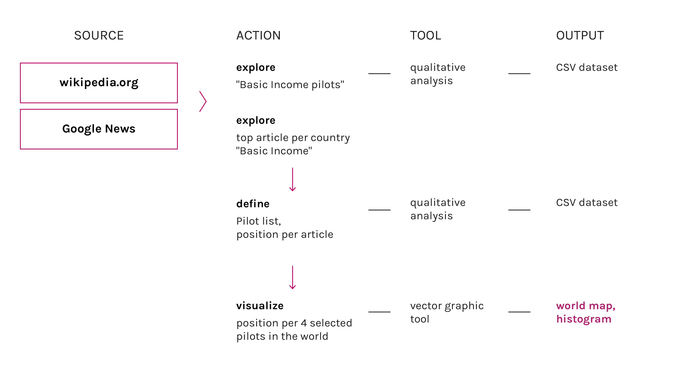

Description
Discussions about basic income are happening in almost every continent. Pilot experiments had been conducted in both rich and poor countries. This visualization shows the media reaction two months after the start of some pilot experiments. In Canada the media reaction includes different positions, there are a lot of different news sources and some of them were not supporting the program. In all other countries the reaction is totally positive, news are only portraying the good effect and the new possibilities given by the basic income system.
Protocol
It was calculated the average position of the totality of articles of every news source, the dataset is the same of last steps of the research.
Data
Timestamp: 15/11/2016
Data source: Seealsology
Download data (22kB)
Average position of news sources